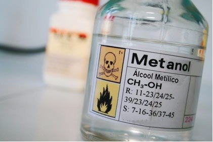
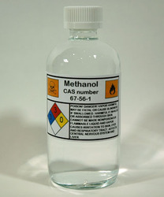

Methanol, also known as methyl alcohol, wood alcohol or spiritus, is a chemical compound with the chemical formula CH3OH. It is the simplest form of alcohol. In the "atmosphere state" it is a light, volatile, colorless, flammable, and toxic liquid with a distinctive odor (smells lighter than ethanol). methanol is used as an anti-frozen coolant, solvent, fuel and as an additive for industrial ethanol. Methanol, also known as methyl alcohol among others, is a chemical with the formula CH3OH (often abbreviated MeOH). Methanol acquired the name wood alcohol because it was once produced chiefly as a byproduct of the destructive distillation of wood. Today, industrial methanol is produced in a catalytic process directly from carbon monoxide, carbon dioxide, and hydrogen.
Methanol is the simplest alcohol, being only a methyl group linked to a hydroxyl group. It is a light, volatile, colorless, flammable liquid with a distinctive odor very similar to that of ethanol (drinking alcohol). However, unlike ethanol, methanol is highly toxic and unfit for consumption. At room temperature, it is a polar liquid. It is used as an antifreeze, solvent, fuel, and as a denaturant for ethanol. It is also used for producing biodiesel by transesterification reaction. Methanol is produced naturally in the anaerobic metabolism of many varieties of bacteria and is commonly present in small amounts in the environment. As a result, the atmosphere contains a small amount of methanol vapor. However, in only a few days, atmospheric methanol is oxidized by sunlight to produce carbon dioxide and water. Methanol is also found in abundant quantities in star-forming regions of space and is used in astronomy as a marker for such regions. It is detected through its spectral emission lines. Methanol when drunk is metabolized first to formaldehyde and then to formic acid or formate salts. These are poisonous to the central nervous system and may result in blindness, coma, and death. Because of these toxic properties, methanol is frequently used as a denaturant additive for ethanol manufactured for industrial uses. This addition of methanol exempts industrial ethanol (commonly known as "denatured alcohol" or "methylated spirit") from liquor excise taxation in the US and some other countries.
 